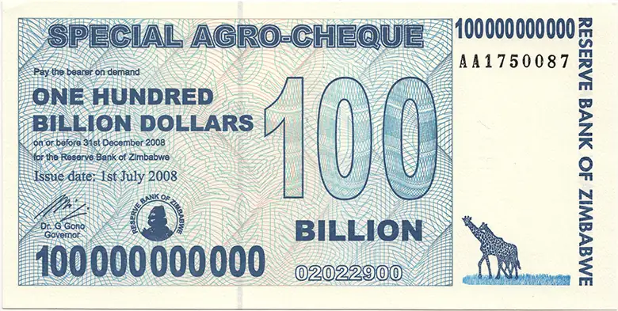
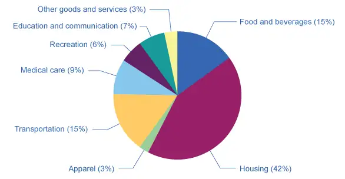
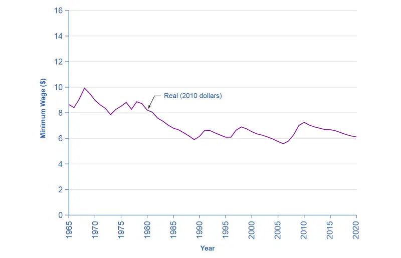

Chapter 22: Inflation¶
Introduction¶

Bring It Home: A $550 Million Loaf of Bread?
If you were born within the last three decades in the United States, Canada, or many other countries in the developed world, you probably have no real experience with a high rate of inflation. Inflation is when most prices in an entire economy are rising. However, there is an extreme form of inflation called hyperinflation. This occurred in Germany between 1921 and 1928, and more recently in Zimbabwe between 2008 and 2009. In November 2008, Zimbabwe had an inflation rate of 79.6 billion percent. In contrast, in 2014, the United States had an average annual rate of inflation of 1.6%.
Zimbabwe’s inflation rate was so high it is difficult to comprehend, so let’s put it into context. It is equivalent to price increases of 98% per day. This means that, from one day to the next, prices essentially double. What is life like in an economy afflicted with hyperinflation? Most of you reading this will have never experienced this phenomenon. The government adjusted prices for commodities in Zimbabwean dollars several times each day. There was no desire to hold on to currency since it lost value by the minute. The people there spent a great deal of time getting rid of any cash they acquired by purchasing whatever food or other commodities they could find. At one point, a loaf of bread cost 550 million Zimbabwean dollars. Teachers' salaries were in the trillions a month; however, this was equivalent to only one U.S. dollar a day. At its height, it took 621,984,228 Zimbabwean dollars to purchase one U.S. dollar.
Government agencies had no money to pay their workers so they started printing money to pay their bills rather than raising taxes. Rising prices caused the government to enact price controls on private businesses, which led to shortages and the emergence of black markets. In 2009, the country abandoned its currency and allowed people to use foreign currencies for purchases.
How does this happen? How can both government and the economy fail to function at the most basic level? Before we consider these extreme cases of hyperinflation, let’s first look at inflation itself.
Chapter Outline: Introduction to Inflation
In this chapter, you will learn about:
- Tracking Inflation
- How to Measure Changes in the Cost of Living
- How the U.S. and Other Countries Experience Inflation
- The Confusion Over Inflation
- Indexing and Its Limitations
Inflation is a general and ongoing rise in the level of prices in an entire economy. Inflation does not refer to a change in relative prices. A relative price change occurs when you see that the price of tuition has risen, but the price of laptops has fallen. Inflation, on the other hand, means that there is pressure for prices to rise in most markets in the economy. In addition, price increases in the supply-and-demand model were one-time events, representing a shift from a previous equilibrium to a new one. Inflation implies an ongoing rise in prices. If inflation happened for one year and then stopped, then it would not be inflation any more.
This chapter begins by showing how to combine prices of individual goods and services to create a measure of overall inflation. It discusses the historical and recent experience of inflation, both in the United States and in other countries around the world. Other chapters have sometimes included a note under an exhibit or a parenthetical reminder in the text saying that the numbers have been adjusted for inflation. In this chapter, it is time to show how to use inflation statistics to adjust other economic variables, so that you can tell how much of, for example, we can attribute the rise in GDP over different periods of time to an actual increase in the production of goods and services and how much we should attribute to the fact that prices for most items have risen.
Inflation has consequences for people and firms throughout the economy, in their roles as lenders and borrowers, wage-earners, taxpayers, and consumers. The chapter concludes with a discussion of some imperfections and biases in the inflation statistics, and a preview of policies for fighting inflation that we will discuss in other chapters.
22.1 Tracking Inflation¶
Learning Objectives
By the end of this section, you will be able to:
- Calculate the annual rate of inflation
- Explain and use index numbers and base years when simplifying the total quantity spent over a year for products
- Calculate inflation rates using index numbers
Dinner table conversations where you might have heard about inflation usually entail reminiscing about when “everything seemed to cost so much less. You used to be able to buy three gallons of gasoline for a dollar and then go see an afternoon movie for another dollar.” Table 22.1 compares some prices of common goods in 1970 and 2017. Of course, the average prices in this table may not reflect the prices where you live. The cost of living in New York City is much higher than in Houston, Texas, for example. In addition, certain products have evolved over recent decades. A new car in 2021, loaded with antipollution equipment, safety gear, computerized engine controls, and many other technological advances, is a more advanced machine (and more fuel efficient) than your typical 1970s car. However, put details like these to one side for the moment, and look at the overall pattern. The primary reason behind the price rises in Table 22.1—and all the price increases for the other products in the economy—is not specific to the market for housing or cars or gasoline or movie tickets. Instead, it is part of a general rise in the level of all prices. At the beginning of 2021, $1 had about the same purchasing power in overall terms of goods and services as 15 cents did in 1972, because of the amount of inflation that has occurred over that time period.
Table 22.1 Price Comparisons, 1970 and 2021 (Sources: See chapter References at end of book.)
| Items | 1970 | 2021 |
|---|---|---|
| Pound of ground beef | $0.66 | $5.96 |
| Pound of butter | $0.87 | $3.50 |
| Movie ticket | $1.55 | $13.70 |
| Sales price of new home (median) | $22,000 | $408,800 |
| New car | $3,000 | $42,000 |
| Gallon of gasoline | $0.36 | $3.32 |
| Average hourly wage for a manufacturing worker | $3.23 | $30.11 |
| Per capita GDP | $5,069 | $63,543 |
Moreover, the power of inflation does not affect just goods and services, but wages and income levels, too. The second-to-last row of Table 22.1 shows that the average hourly wage for a manufacturing worker increased nearly ten-fold from 1970 to 2021. The average worker in 2021 is better educated and more productive than the average worker in 1970—but not six times more productive. Per capita GDP increased substantially from 1970 to 2021, but is the average person in the U.S. economy really more than twelve times better off in just 51 years? Not likely.
A modern economy has millions of goods and services whose prices are continually quivering in the breezes of supply and demand. How can all of these shifts in price attribute to a single inflation rate? As with many problems in economic measurement, the conceptual answer is reasonably straightforward: Economists combine prices of a variety of goods and services into a single price level. The inflation rate is simply the percentage change in the price level. Applying the concept, however, involves some practical difficulties.
The Price of a Basket of Goods¶
To calculate the price level, economists begin with the concept of a basket of goods and services, consisting of the different items individuals, businesses, or organizations typically buy. The next step is to look at how the prices of those items change over time. In thinking about how to combine individual prices into an overall price level, many people find that their first impulse is to calculate the average of the prices. Such a calculation, however, could easily be misleading because some products matter more than others.
Changes in the prices of goods for which people spend a larger share of their incomes will matter more than changes in the prices of goods for which people spend a smaller share of their incomes. For example, an increase of 10% in the rental rate on housing matters more to most people than whether the price of carrots rises by 10%. To construct an overall measure of the price level, economists compute a weighted average of the prices of the items in the basket, where the weights are based on the actual quantities of goods and services people buy. The following Work It Out feature walks you through the steps of calculating the annual rate of inflation based on a few products.
Work It Out: Calculating an Annual Rate of Inflation
Consider the simple basket of goods with only three items, represented in Table 22.2. Say that in any given month, a college student spends money on 20 hamburgers, one bottle of aspirin, and five movies. The table provides prices for these items over four years through each time period (Pd). Prices of some goods in the basket may rise while others fall. In this example, the price of aspirin does not change over the four years, while movies increase in price and hamburgers bounce up and down. The table shows the cost of buying the given basket of goods at the prices prevailing at that time.
Table 22.2 A College Student’s Basket of Goods
| Items | Hamburger | Aspirin | Movies | Total | Inflation Rate |
|---|---|---|---|---|---|
| Qty | 20 | 1 bottle | 5 | - | - |
| (Pd 1) Price | $3.00 | $10.00 | $6.00 | - | - |
| (Pd 1) Amount Spent | $60.00 | $10.00 | $30.00 | $100.00 | - |
| (Pd 2) Price | $3.20 | $10.00 | $6.50 | - | - |
| (Pd 2) Amount Spent | $64.00 | $10.00 | $32.50 | $106.50 | 6.5% |
| (Pd 3) Price | $3.10 | $10.00 | $7.00 | - | - |
| (Pd 3) Amount Spent | $62.00 | $10.00 | $35.00 | $107.00 | 0.5% |
| (Pd 4) Price | $3.50 | $10.00 | $7.50 | - | - |
| (Pd 4) Amount Spent | $70.00 | $10.00 | $37.50 | $117.50 | 9.8% |
To calculate the annual rate of inflation in this example:
Step 1. Find the percentage change in the cost of purchasing the overall basket of goods between the time periods. The general equation for percentage changes between two years, whether in the context of inflation or in any other calculation, is:
Step 2. From period 1 to period 2, the total cost of purchasing the basket of goods in Table 22.2 rises from $100 to $106.50. Therefore, the percentage change over this time—the inflation rate—is:
Step 3. From period 2 to period 3, the overall change in the cost of purchasing the basket rises from $106.50 to $107. Thus, the inflation rate over this time, again calculated by the percentage change, is approximately:
Step 4. From period 3 to period 4, the overall cost rises from $107 to $117.50. The inflation rate is thus:
This calculation of the change in the total cost of purchasing a basket of goods accounts for how much a student spends on each good. Hamburgers are the lowest-priced good in this example, and aspirin is the highest-priced. If an individual buys a greater quantity of a low-price good, then it makes sense that changes in the price of that good should have a larger impact on the buying power of that person’s money. The larger impact of hamburgers shows up in the “amount spent” row, where, in all time periods, hamburgers are the largest item within the amount spent row.
Index Numbers¶
The numerical results of a calculation based on a basket of goods can get a little messy. The simplified example in Table 22.2 has only three goods and the prices are in even dollars, not numbers like 79 cents or $124.99. If the list of products were much longer, and we used more realistic prices, the total quantity spent over a year might be some messy-looking number like $17,147.51 or $27,654.92.
To simplify the task of interpreting the price levels for more realistic and complex baskets of goods, economists typically report the price level in each period as an index number, rather than as the dollar amount for buying the basket of goods. Economists create price indices to calculate an overall average change in relative prices over time. To convert the money spent on the basket to an index number, economists arbitrarily choose one year to be the base year, or starting point from which we measure changes in prices. The base year, by definition, has an index number equal to 100. This sounds complicated, but it is really a simple math trick. In the example above, say that we choose time period 3 as the base year. Since the total amount of spending in that year is $107, we divide that amount by itself ($107) and multiply by 100. Again, this is because the index number in the base year always has to have a value of 100. Then, to figure out the values of the index number for the other years, we divide the dollar amounts for the other years by 1.07 as well. Note also that the dollar signs cancel out so that index numbers have no units.
Table 22.3 shows calculations for the other values of the index number, based on the example in Table 22.2. Because we calculate the index numbers so that they are in exactly the same proportion as the total dollar cost of purchasing the basket of goods, we can calculate the inflation rate based on the index numbers, using the percentage change formula. Thus, the inflation rate from period 1 to period 2 would be
This is the same answer that we derived when measuring inflation based on the dollar cost of the basket of goods for the same time period.
Table 22.3 Calculating Index Numbers When Period 3 is the Base Year
| Total Spending | Index Number | Inflation Rate Since Previous Period | |
|---|---|---|---|
| Period 1 | $100 | \(\begin{array}{rcl} \frac{100}{1.07} & \ \text{=}\ & 93.4 \end{array}\) | |
| Period 2 | $106.50 | \(\begin{array}{rcl} \frac{106.50}{1.07} & \ \text{=}\ & 99.5 \end{array}\) | \(\begin{array}{rclll} \frac{\left( \text{99.5 – 93.4} \right)}{93.4} & \ \text{=}\ & 0.065 & \ \text{=}\ & \text{6.5\%} \end{array}\) |
| Period 3 | $107 | \(\begin{array}{rcl} \frac{107}{1.07} & \ \text{=}\ & 100.0 \end{array}\) | \(\begin{array}{rclll} \frac{\text{100 – 99.5}}{99.5} & \ \text{=}\ & 0.005 & \ \text{=}\ & \text{0.5\%} \end{array}\) |
| Period 4 | $117.50 | \(\begin{array}{rcl} \frac{117.50}{1.07} & \ \text{=}\ & 109.8 \end{array}\) | \(\begin{array}{rclll} \frac{\text{109.8 – 100}}{100} & \ \text{=}\ & 0.098 & \ \text{=}\ & \text{9.8\%} \end{array}\) |
If the inflation rate is the same whether it is based on dollar values or index numbers, then why bother with the index numbers? The advantage is that indexing allows easier eyeballing of the inflation numbers. If you glance at two index numbers like 107 and 110, you know automatically that the rate of inflation between the two years is about, but not quite exactly equal to, 3%. By contrast, imagine that we express the price levels in absolute dollars of a large basket of goods, so that when you looked at the data, the numbers were $19,493.62 and $20,040.17. Most people find it difficult to eyeball those kinds of numbers and say that it is a change of about 3%. However, the two numbers expressed in absolute dollars are exactly in the same proportion of 107 to 110 as the previous example. If you’re wondering why simple subtraction of the index numbers wouldn’t work, read the following Clear It Up feature.
Clear It Up: Why do you not just subtract index numbers?
A word of warning: When a price index moves from, say, 107 to 110, the rate of inflation is not exactly 3%. Remember, the inflation rate is not derived by subtracting the index numbers, but rather through the percentage-change calculation. We calculate the precise inflation rate as the price index moves from 107 to 110 as 100 x (110 – 107) / 107 = 100 x 0.028 = 2.8%. When the base year is fairly close to 100, a quick subtraction is not a terrible shortcut to calculating the inflation rate—but when precision matters down to tenths of a percent, subtracting will not give the right answer.
Two final points about index numbers are worth remembering. First, index numbers have no dollar signs or other units attached to them. Although we can use index numbers to calculate a percentage inflation rate, the index numbers themselves do not have percentage signs. Index numbers just mirror the proportions that we find in other data. They transform the other data so that it is easier to work with the data.
Second, the choice of a base year for the index number—that is, the year that is automatically set equal to 100—is arbitrary. We choose it as a starting point from which we can track changes in prices. In the official inflation statistics, it is common to use one base year for a few years, and then to update it, so that the base year of 100 is relatively close to the present. However, any base year that we choose for the index numbers will result in exactly the same inflation rate. To see this in the previous example, imagine that period 1 is the base year when total spending was $100, and we assign it an index number of 100. At a glance, you can see that the index numbers would now exactly match the dollar figures, and the inflation rate in the first period would be 6.5%.
Now that we see how indexes work to track inflation, the next module will show us how economists measure the cost of living.
Link It Up
Watch this video from the cartoon Duck Tales to view a mini-lesson on inflation.
22.2 How to Measure Changes in the Cost of Living¶
Learning Objectives
By the end of this section, you will be able to:
- Use the Consumer Price Index (CPI) to calculate U.S. inflation rates
- Identify several ways the Bureau of Labor Statistics avoids biases in the Consumer Price Index (CPI)
- Differentiate among the Consumer Price Index (CPI), the Producer Price Index (PPI), the International Price Index, the Employment Cost Index, and the GDP deflator.
The most commonly cited measure of inflation in the United States is the Consumer Price Index (CPI). Government statisticians at the U.S. Bureau of Labor Statistics calculate the CPI based on the prices in a fixed basket of goods and services that represents the purchases of the average family of four. In recent years, the statisticians have paid considerable attention to a subtle problem: that the change in the total cost of buying a fixed basket of goods and services over time is conceptually not quite the same as the change in the cost of living, because the cost of living represents how much it costs for a person to feel that their consumption provides an equal level of satisfaction or utility.
To understand the distinction, imagine that over the past 10 years, the cost of purchasing a fixed basket of goods increased by 25% and your salary also increased by 25%. Has your personal standard of living held constant? If you do not necessarily purchase an identical fixed basket of goods every year, then an inflation calculation based on the cost of a fixed basket of goods may be a misleading measure of how your cost of living has changed. Two problems arise here: substitution bias and quality/new goods bias.
When the price of a good rises, consumers tend to purchase less of it and to seek out substitutes instead. Conversely, as the price of a good falls, people will tend to purchase more of it. This pattern implies that goods with generally rising prices should tend over time to become less important in the overall basket of goods used to calculate inflation, while goods with falling prices should tend to become more important. Consider, as an example, a rise in the price of peaches by $100 per pound. If consumers were utterly inflexible in their demand for peaches, this would lead to a big rise in the price of food for consumers. Alternatively, imagine that people are utterly indifferent to whether they have peaches or other types of fruit. Now, if peach prices rise, people completely switch to other fruit choices and the average price of food does not change at all. A fixed and unchanging basket of goods assumes that consumers are locked into buying exactly the same goods, regardless of price changes—not a very likely assumption. Thus, substitution bias—the rise in the price of a fixed basket of goods over time—tends to overstate the rise in a consumer’s true cost of living, because it does not take into account that the person can substitute away from goods whose relative prices have risen.
The other major problem in using a fixed basket of goods as the basis for calculating inflation is how to deal with the arrival of improved versions of older goods or altogether new goods. Consider the problem that arises if a cereal is improved by adding 12 essential vitamins and minerals—and also if a box of the cereal costs 5% more. It would clearly be misleading to count the entire resulting higher price as inflation, because the new price reflects a higher quality (or at least different) product. Ideally, one would like to know how much of the higher price is due to the quality change, and how much of it is just a higher price. The Bureau of Labor Statistics, which is responsible for computing the Consumer Price Index, must deal with these difficulties in adjusting for quality changes.
Link It Up
Visit this website to view a list of Ford car prices between 1909 and 1927. Consider how these prices compare to today’s models. Is the product today of a different quality?
We can think of a new product as an extreme improvement in quality—from something that did not exist to something that does. However, the basket of goods that was fixed in the past obviously does not include new goods created since then. The basket of goods and services in the Consumer Price Index (CPI) is revised and updated over time, and so new products are gradually included. However, the process takes some time. For example, room air conditioners were widely sold in the early 1950s, but were not introduced into the basket of goods behind the Consumer Price Index until 1964. The VCR and personal computer were available in the late 1970s and widely sold by the early 1980s, but did not enter the CPI basket of goods until 1987. By 1996, there were more than 40 million cellular phone subscribers in the United States—but cell phones were not yet part of the CPI basket of goods. The parade of inventions has continued, with the CPI inevitably lagging a few years behind.
The arrival of new goods creates problems with respect to the accuracy of measuring inflation. The reason people buy new goods, presumably, is that the new goods offer better value for money than existing goods. Thus, if the price index leaves out new goods, it overlooks one of the ways in which the cost of living is improving. In addition, the price of a new good is often higher when it is first introduced and then declines over time. If the new good is not included in the CPI for some years, until its price is already lower, the CPI may miss counting this price decline altogether. Taking these arguments together, the quality/new goods bias means that the rise in the price of a fixed basket of goods over time tends to overstate the rise in a consumer’s true cost of living, because it does not account for how improvements in the quality of existing goods or the invention of new goods improves the standard of living. The following Clear It Up feature is a must-read on how statisticians comprise and calculate the CPI.
Clear It Up: How do U.S. government statisticians measure the Consumer Price Index?
When the U.S. Bureau of Labor Statistics (BLS) calculates the Consumer Price Index, the first task is to decide on a basket of goods that is representative of the purchases of the average household. We do this by using the Consumer Expenditure Survey, a national survey of about 7,000 households, which provides detailed information on spending habits. Statisticians divide consumer expenditures into eight major groups (seen below), which in turn they divide into more than 200 individual item categories. The BLS currently uses 1982–1984 as the base period.
For each of the 200 individual expenditure items, the BLS chooses several hundred very specific examples of that item and looks at the prices of those examples. In figuring out the “breakfast cereal” item under the overall category of “foods and beverages,” the BLS picks several hundred examples of breakfast cereal. One example might be the price of a 24-oz. box of a particular brand of cereal sold at a particular store. The BLS statistically selects specific products and sizes and stores to reflect what people buy and where they shop. The basket of goods in the Consumer Price Index thus consists of about 80,000 products; that is, several hundred specific products in over 200 broad-item categories. Statisticians rotate about one-quarter of these 80,000 specific products of the sample each year, and replace them with a different set of products.
The next step is to collect data on prices. Data collectors visit or call about 23,000 stores in 87 urban areas all over the United States every month to collect prices on these 80,000 specific products. The BLS also conducts a survey of 50,000 landlords or tenants to collect information about rents.
Statisticians then calculate the Consumer Price Index by taking the 80,000 prices of individual products and combining them, using weights (see Figure 22.2) determined by the quantities of these products that people buy and allowing for factors like substitution between goods and quality improvements, into price indices for the 200 or so overall items. Then, the statisticians combine the price indices for the 200 items into an overall Consumer Price Index. According the Consumer Price Index website, there are eight categories that data collectors use:
The Eight Major Categories in the Consumer Price Index
- Food and beverages (breakfast cereal, milk, coffee, chicken, wine, full-service meals, and snacks)
- Housing (renter’s cost of housing, homeowner’s cost of housing, fuel oil, bedroom furniture)
- Apparel (men’s shirts and sweaters, women’s dresses, jewelry)
- Transportation (new vehicles, airline fares, gasoline, motor vehicle insurance)
- Medical care (prescription drugs and medical supplies, physicians’ services, eyeglasses and eye care, hospital services)
- Recreation (televisions, cable television, pets and pet products, sports equipment, admissions)
- Education and communication (college tuition, postage, telephone services, computer software and accessories)
- Other goods and services (tobacco and smoking products, haircuts and other personal services, funeral expenses)

The CPI and Core Inflation Index¶
Imagine if you were driving a company truck across the country- you probably would care about things like the prices of available roadside food and motel rooms as well as the truck’s operating condition. However, the manager of the firm might have different priorities. He would care mostly about the truck’s on-time performance and much less so about the food you were eating and the places you were staying. In other words, the company manager would be paying attention to the firm's production, while ignoring transitory elements that impacted you, but did not affect the company’s bottom line.
In a sense, a similar situation occurs with regard to measures of inflation. As we’ve learned, CPI measures prices as they affect everyday household spending. Economists typically calculate a core inflation index by taking the CPI and excluding volatile economic variables. In this way, economists have a better sense of the underlying trends in prices that affect the cost of living.
Examples of excluded variables include energy and food prices, which can jump around from month to month because of the weather. According to an article by Kent Bernhard, during Hurricane Katrina in 2005, a key supply point for the nation’s gasoline was nearly knocked out. Gas prices quickly shot up across the nation, in some places by up to 40 cents a gallon in one day. This was not the cause of an economic policy but rather a short-lived event until the pumps were restored in the region. In this case, the CPI that month would register the change as a cost of living event to households, but the core inflation index would remain unchanged. As a result, the Federal Reserve’s decisions on interest rates would not be influenced. Similarly, droughts can cause world-wide spikes in food prices that, if temporary, do not affect the nation’s economic capability.
As former Chairman of the Federal Reserve Ben Bernanke noted in 1999 about the core inflation index, “It provide(s) a better guide to monetary policy than the other indices, since it measures the more persistent underlying inflation rather than transitory influences on the price level.” Bernanke also noted that it helps communicate that the Federal Reserve does not need to respond to every inflationary shock since some price changes are transitory and not part of a structural change in the economy.
In sum, both the CPI and the core inflation index are important, but serve different audiences. The CPI helps households understand their overall cost of living from month to month, while the core inflation index is a preferred gauge from which to make important government policy changes.
Practical Solutions for the Substitution and the Quality/New Goods Biases¶
By the early 2000s, the Bureau of Labor Statistics was using alternative mathematical methods for calculating the Consumer Price Index, more complicated than just adding up the cost of a fixed basket of goods, to allow for some substitution between goods. It was also updating the basket of goods behind the CPI more frequently, so that it could include new and improved goods more rapidly. For certain products, the BLS was carrying out studies to try to measure the quality improvement. For example, with computers, an economic study can try to adjust for changes in speed, memory, screen size, and other product characteristics, and then calculate the change in price after accounting for these product changes. However, these adjustments are inevitably imperfect, and exactly how to make these adjustments is often a source of controversy among professional economists.
By the early 2000s, the substitution bias and quality/new goods bias had been somewhat reduced, so that since then the rise in the CPI probably overstates the true rise in inflation by only about 0.5% per year. Over one or a few years, this is not much. Over a period of a decade or two, even half of a percent per year compounds to a more significant amount. In addition, the CPI tracks prices from physical locations, and not at online sites like Amazon, where prices can be lower.
When measuring inflation (and other economic statistics, too), a tradeoff arises between simplicity and interpretation. If we calculate the inflation rate with a basket of goods that is fixed and unchanging, then the calculation of an inflation rate is straightforward, but the problems of substitution bias and quality/new goods bias will arise. However, when the basket of goods is allowed to shift and evolve to reflect substitution toward lower relative prices, quality improvements, and new goods, the technical details of calculating the inflation rate grow more complex.
Additional Price Indices: PPI, GDP Deflator, and More¶
The basket of goods behind the Consumer Price Index represents an average hypothetical U.S. household's consumption, which is to say that it does not exactly capture anyone’s personal experience. When the task is to calculate an average level of inflation, this approach works fine. What if, however, you are concerned about inflation experienced by a certain group, like the elderly, or the poor, or single-parent families with children, or Hispanic-Americans? In specific situations, a price index based on the buying power of the average consumer may not feel quite right.
This problem has a straightforward solution. If the Consumer Price Index does not serve the desired purpose, then invent another index, based on a basket of goods appropriate for the group of interest. The Bureau of Labor Statistics publishes a number of experimental price indices: some for particular groups like the elderly or the poor, some for different geographic areas, and some for certain broad categories of goods like food or housing.
The BLS also calculates several price indices that are not based on baskets of consumer goods. For example, the Producer Price Index (PPI) is based on prices paid for supplies and inputs by producers of goods and services. We can break it down into price indices for different industries, commodities, and stages of processing (like finished goods, intermediate goods, or crude materials for further processing). There is an International Price Index based on the prices of merchandise that is exported or imported. An Employment Cost Index measures wage inflation in the labor market. The GDP deflator, which the Bureau of Economic Analysis measures, is a price index that includes all the GDP components (that is, consumption plus investment plus government plus exports minus imports). Unlike the CPI, its baskets are not fixed but re-calculate what that year’s GDP would have been worth using the base-year’s prices. MIT's Billion Prices Project is a more recent alternative attempt to measure prices: economists collect data online from retailers and then put them into an index that they compare to the CPI (Source: http://bpp.mit.edu/usa/).
What’s the best measure of inflation? If one is concerned with the most accurate measure of inflation, one should use the GDP deflator as it picks up the prices of goods and services produced. However, it is not a good measure of the cost of living as it includes prices of many products not purchased by households (for example, aircraft, fire engines, factory buildings, office complexes, and bulldozers). If one wants the most accurate measure of inflation as it impacts households, one should use the CPI, as it only picks up prices of products purchased by households. That is why economists sometimes refer to the CPI as the cost-of-living index. As the Bureau of Labor Statistics states on its website: “The ‘best’ measure of inflation for a given application depends on the intended use of the data.”
22.3 How the U.S. and Other Countries Experience Inflation¶
Learning Objectives
By the end of this section, you will be able to:
- Identify patterns of inflation for the United States using data from the Consumer Price Index
- Identify patterns of inflation on an international level
In the last three decades, inflation has been relatively low in the U.S. economy, with the Consumer Price Index typically rising 2% to 4% per year. Looking back over the twentieth century, there have been several periods where inflation caused the price level to rise at double-digit rates, but nothing has come close to hyperinflation.
Historical Inflation in the U.S. Economy¶
Figure 22.3 (a) shows the level of prices in the Consumer Price Index stretching back to 1913. In this case, the base years (when the CPI is defined as 100) are set for the average level of prices that existed from 1982 to 1984. Figure 22.3 (b) shows the annual percentage changes in the CPI over time, which is the inflation rate.
![Two graphs are illustrated here. The first shows the U.S. price level over time. The y-axis measures the price level, from 0 to 300, in increments of 50. The x-axis shows years from 1948 to 2020. Beginning in 1948, the price level is roughly 25, then it increases at a relatively slow rate, so the line is fairly flat, until 1970, when it gets steeper. In 2020 the price index is around 260. The second graph illustrates the U.S. inflation rate over time. The y-axis measures the inflation rate as a percent, from –2 to 16, in 2 percent increments. The x-axis shows years from 1948 to 2020. The inflation rate rises and falls over time. In 1948 it is roughly 7 percent, then it drops to –1 in 1950, then climbs to 8 percent in 1952, then it declines to 0 in 1956, then it gradually increases to 1972, where it spikes to 11 percent, with another spike 1980 to nearly 14 percent, then it declines to 2 percent in 1985, and generally stays in the 2 to 5 percent range for the next 15 years, with a negative rate in 2009.](img/cnx-econ3ev1-2-c22-03.webp)
Inflation as measured by the consumer price index reflects the annual percentage change in the cost to the average consumer of acquiring a basket of goods and services that may be fixed or changed at specified intervals, such as yearly.
The first two waves of inflation are easy to characterize in historical terms: they are right after World War I and World War II. However, there are also two periods of severe negative inflation—called deflation—in the early decades of the twentieth century: one following the deep 1920-21 recession and the other during the Great Depression of the 1930s. (Since inflation is a time when the buying power of money in terms of goods and services is reduced, deflation will be a time when the buying power of money in terms of goods and services increases.) For the period from 1900 to about 1960, the major inflations and deflations nearly balanced each other out, so the average annual rate of inflation over these years was only about 1% per year. A third wave of more severe inflation arrived in the 1970s and departed in the early 1980s.
Link It Up
Visit this website to use an inflation calculator and discover how prices have changed in the last 100 years.
Times of recession or depression often seem to be times when the inflation rate is lower, as in the recession of 1920–1921, the Great Depression, the recession of 1980–1982, and the Great Recession in 2008–2009. There were a few months in 2009 that were deflationary, but not at an annual rate. High levels of unemployment typically accompany recessions, and the total demand for goods falls, pulling the price level down. Conversely, the rate of inflation often, but not always, seems to start moving up when the economy is growing very strongly, like right after wartime or during the 1960s. The frameworks for macroeconomic analysis, that we developed in other chapters, will explain why recession often accompanies higher unemployment and lower inflation, while rapid economic growth often brings lower unemployment but higher inflation.
Inflation around the World¶
Around the rest of the world, the pattern of inflation has been very mixed; Figure 22.4 shows inflation rates over the last several decades. Many industrialized countries, not just the United States, had relatively high inflation rates in the 1970s. For example, in 1975, Japan’s inflation rate was over 8% and the inflation rate for the United Kingdom was almost 25%. In the 1980s, inflation rates came down in the United States and in Europe and have largely stayed down.
![This graph uses four lines to illustrate the inflation rates of the U.S., Japan, Germany, and the United Kingdom. The y-axis measures the inflation rate as a percent, from –5 to 30, in 5 percent increments. The x-axis shows years from 1960 to 2020. All four lines generally follow the same pattern of increases and decreases. From 1960 to 1990, Germany has the lowest inflation rates. From 1990 to 2020, Japan has the lowest inflation rates. Generally, the United Kingdom has the highest inflation rates, followed by the U.S. The graph shows that the United States, Japan, Germany, and the United Kingdom all had periods of high inflation in the 1970s and early 1980s. Japan had inflation of 23 percent in 1974, and the United Kingdom had inflation of nearly 25 percent in 1975. Beginning in the mid-1980s, inflation steadily declined in each country, and was consistently below 5 percent in all four countries from the early 1990s to 2020. Japan had negative inflation for much of the 2000s.](img/cnx-econ3ev1-2-c22-04.webp)
Countries with controlled economies in the 1970s, like the Soviet Union and China, historically had very low rates of measured inflation—because prices were forbidden to rise by law, except for the cases where the government deemed a price increase to be due to quality improvements. However, these countries also had perpetual shortages of goods, since forbidding prices to rise acts like a price ceiling and creates a situation where quantity demanded often exceeds quantity supplied. As Russia and China made a transition toward more market-oriented economies, they also experienced outbursts of inflation, although we should regard the statistics for these economies as somewhat shakier. Inflation in China averaged about 10% per year for much of the 1980s and early 1990s, although it has dropped off since then. Russia experienced hyperinflation—an outburst of high inflation—of 2,500% per year in the early 1990s, although by 2006 Russia’s consumer price inflation had dipped below 10% per year, as Figure 22.5 shows. The closest the United States has ever reached hyperinflation was during the 1860–1865 Civil War, in the Confederate states.
![There are two graphs illustrated here. The first shows three lines representing the inflation rate over time in Brazil, Russia, and China, from the years 1981 to 1995. Years are measured on the x-axis, and the inflation rate is measured on the y-axis, from 0 to 3500 percent, in increments of 500 percent. Only Brazil has inflation rate data available for all the years depicted. Brazil’s inflation rate is generally flat, at between 25 and 50 percent, from 1981 to 1987, when it spikes to 3,000 percent in 1990. It then plummets to 500 percent in 1991, then increases to slightly above 2000 percent in 1994, and then plummets again in 1995, to around 25 percent. In 1993, Russia’s inflation rate is near 1,000 percent, but it declines to 50 percent in 1995. China’s inflation rate is 0 percent in 1994 and 1995. The second graph shows 3 lines, representing the inflation rate over time in Brazil, Russia, and China, from the years 1996 to 2020. Years are measured on the x-axis, and the inflation rate is measured on the y-axis, from –10 to 100 percent, in increments of 10 percent. Brazil’s inflation rate begins at 15 percent in 1996, and declines to 2 percent in 1998. It rises to 15 percent in 2003, then declines and is relatively constant between 5 and 10 percent until 2020. Russia’s inflation rate begins at 45 percent in 1996, declines to 15 percent in 1997, then increases to 85 percent in 1999, then declines to 20 percent in 2000, and continues to decrease to nearly 0 percent in 2020. China’s inflation rate is the lowest of the three countries, beginning at 9 percent in 1996, and declining to 0 percent in 1998, and remaining between 0 and 3 percent through 2020.](img/cnx-econ3ev1-2-c22-05.webp)
Many countries in Latin America experienced raging inflation during the 1980s and early 1990s, with inflation rates often well above 100% per year. In 1990, for example, both Brazil and Argentina saw inflation climb above 2000%. Certain countries in Africa experienced extremely high rates of inflation, sometimes bordering on hyperinflation, in the 1990s. Nigeria, the most populous country in Africa, had an inflation rate of 75% in 1995.
In the early 2000s, the problem of inflation appears to have diminished for most countries, at least in comparison to the worst times of recent decades. As we noted in this earlier Bring it Home feature, in recent years, the world’s worst example of hyperinflation was in Zimbabwe, where at one point the government was issuing bills with a face value of $100 trillion (in Zimbabwean dollars)—that is, the bills had $100,000,000,000,000 written on the front, but were almost worthless. In many countries, the memory of double-digit, triple-digit, and even quadruple-digit inflation is not very far in the past.
22.4 The Confusion Over Inflation¶
Learning Objectives
By the end of this section, you will be able to:
- Explain how inflation can cause redistributions of purchasing power
- Identify ways inflation can blur the perception of supply and demand
- Explain the economic benefits and challenges of inflation
Economists usually oppose high inflation, but they oppose it in a milder way than many non-economists. Robert Shiller, one of 2013’s Nobel Prize winners in economics, carried out several surveys during the 1990s about attitudes toward inflation. One of his questions asked, “Do you agree that preventing high inflation is an important national priority, as important as preventing drug use or preventing deterioration in the quality of our schools?” Answers were on a scale of 1–5, where 1 meant “Fully agree” and 5 meant “Completely disagree.” For the U.S. population as a whole, 52% answered “Fully agree” that preventing high inflation was a highly important national priority and just 4% said “Completely disagree.” However, among professional economists, only 18% answered “Fully agree,” while the same percentage of 18% answered “Completely disagree.”
The Land of Funny Money¶
What are the economic problems caused by inflation, and why do economists often regard them with less concern than the general public? Consider a very short story: “The Land of Funny Money.”
One morning, everyone in the Land of Funny Money awakened to find that everything denominated in money had increased by 20%. The change was completely unexpected. Every price in every store was 20% higher. Paychecks were 20% higher. Interest rates were 20 % higher. The amount of money, everywhere from wallets to savings accounts, was 20% larger. This overnight inflation of prices made newspaper headlines everywhere in the Land of Funny Money. However, the headlines quickly disappeared, as people realized that in terms of what they could actually buy with their incomes, this inflation had no economic impact. Everyone’s pay could still buy exactly the same set of goods as it did before. Everyone’s savings were still sufficient to buy exactly the same car, vacation, or retirement that they could have bought before. Equal levels of inflation in all wages and prices ended up not mattering much at all.
When the people in Robert Shiller’s surveys explained their concern about inflation, one typical reason was that they feared that as prices rose, they would not be able to afford to buy as much. In other words, people were worried because they did not live in a place like the Land of Funny Money, where all prices and wages rose simultaneously. Instead, people live here on Planet Earth, where prices might rise while wages do not rise at all, or where wages rise more slowly than prices.
Economists note that over most periods, the inflation level in prices is roughly similar to the inflation level in wages, and so they reason that, on average, over time, people’s economic status is not greatly changed by inflation. If all prices, wages, and interest rates adjusted automatically and immediately with inflation, as in the Land of Funny Money, then no one’s purchasing power, profits, or real loan payments would change. However, if other economic variables do not move exactly in sync with inflation, or if they adjust for inflation only after a time lag, then inflation can cause three types of problems: unintended redistributions of purchasing power, blurred price signals, and difficulties in long-term planning.
Unintended Redistributions of Purchasing Power¶
Inflation can cause redistributions of purchasing power that hurt some and help others. People who are hurt by inflation include those who are holding considerable cash, whether it is in a safe deposit box or in a cardboard box under the bed. When inflation happens, the buying power of cash diminishes. However, cash is only an example of a more general problem: anyone who has financial assets invested in a way that the nominal return does not keep up with inflation will tend to be affected by inflation. For example, if a person has money in a bank account that pays 4% interest, but inflation rises to 5%, then the real rate of return for the money invested in that bank account is negative 1%.
The problem of a good-looking nominal interest rate transforming into an ugly-looking real interest rate can be worsened by taxes. The U.S. income tax is charged on the nominal interest received in dollar terms, without an adjustment for inflation. Thus, the government taxes a person who invests $10,000 and receives a 5% nominal rate of interest on the $500 received—no matter whether the inflation rate is 0%, 5%, or 10%. If inflation is 0%, then the real interest rate is 5% and all $500 is a gain in buying power. However, if inflation is 5%, then the real interest rate is zero and the person had no real gain—but owes income tax on the nominal gain anyway. If inflation is 10%, then the real interest rate is negative 5% and the person is actually falling behind in buying power, but would still owe taxes on the $500 in nominal gains.
Inflation can cause unintended redistributions for wage earners, too. Wages do typically creep up with inflation over time, eventually. The last row of Table 22.1 at the start of this chapter showed that the average hourly wage in manufacturing in the U.S. economy increased from $3.23 in 1970 to $30.11 in 2021, which is an increase by a factor of close to ten. Over that time period, the Consumer Price Index increased by about a factor of eight. However, increases in wages may lag behind inflation for a year or two, since wage adjustments are often somewhat sticky and occur only once or twice a year. Moreover, the extent to which wages keep up with inflation creates insecurity for workers and may involve painful, prolonged conflicts between employers and employees. If the government adjusts minimum wage for inflation only infrequently, minimum wage workers are losing purchasing power from their nominal wages, as Figure 22.6 shows.

One sizable group of people has often received a large share of their income in a form that does not increase over time: retirees who receive a private company pension. Most pensions have traditionally been set as a fixed nominal dollar amount per year at retirement. For this reason, economists call pensions “defined benefits” plans. Even if inflation is low, the combination of inflation and a fixed income can create a substantial problem over time. A person who retires on a fixed income at age 65 will find that losing just 1% to 2% of buying power per year to inflation compounds to a considerable loss of buying power after a decade or two.
Fortunately, pensions and other defined benefits retirement plans are increasingly rare, replaced instead by “defined contribution” plans, such as 401(k)s and 403(b)s. In these plans, the employer contributes a fixed amount to the worker’s retirement account on a regular basis (usually every pay check). The employee often contributes as well. The worker invests these funds in a wide range of investment vehicles. These plans are tax deferred, and they are portable so that if the individual takes a job with a different employer, their 401(k) comes with them. To the extent that the investments made generate real rates of return, retirees are not burdened by the inflation costs of traditional pensioners.
However, ordinary people can sometimes benefit from the unintended redistributions of inflation. Consider someone who borrows $10,000 to buy a car at a fixed interest rate of 9%. If inflation is 3% at the time the loan is made, then the borrower must repay the loan at a real interest rate of 6%. However, if inflation rises to 9%, then the real interest rate on the loan is zero. In this case, the borrower’s benefit from inflation is the lender’s loss. A borrower paying a fixed interest rate, who benefits from inflation, is just the flip side of an investor receiving a fixed interest rate, who suffers from inflation. The lesson is that when interest rates are fixed, rises in the rate of inflation tend to penalize suppliers of financial capital, who receive repayment in dollars that are worth less because of inflation, while demanders of financial capital end up better off, because they can repay their loans in dollars that are worth less than originally expected.
The unintended redistributions of buying power that inflation causes may have a broader effect on society. America’s widespread acceptance of market forces rests on a perception that people’s actions have a reasonable connection to market outcomes. When inflation causes a retiree who built up a pension or invested at a fixed interest rate to suffer, however, while someone who borrowed at a fixed interest rate benefits from inflation, it is hard to believe that this outcome was deserved in any way. Similarly, when homeowners benefit from inflation because the price of their homes rises, while renters suffer because they are paying higher rent, it is hard to see any useful incentive effects. One of the reasons that the general public dislikes inflation is a sense that it makes economic rewards and penalties more arbitrary—and therefore likely to be perceived as unfair – even dangerous, as the next Clear It Up feature shows.
Clear It Up: Is there a connection between German hyperinflation and Hitler’s rise to power?
Germany suffered an intense hyperinflation of its currency, the Mark, in the years after World War I, when the Weimar Republic in Germany resorted to printing money to pay its bills and the onset of the Great Depression created the social turmoil that Adolf Hitler was able to take advantage of in his rise to power. Shiller described the connection this way in a National Bureau of Economic Research 1996 Working Paper:
“A fact that is probably little known to young people today, even in Germany, is that the final collapse of the Mark in 1923, the time when the Mark’s inflation reached astronomical levels (inflation of 35,974.9% in November 1923 alone, for an annual rate that month of 4.69 × 1028%), came in the same month as did Hitler’s Beer Hall Putsch, his Nazi Party’s armed attempt to overthrow the German government. This failed putsch resulted in Hitler’s imprisonment, at which time he wrote his book Mein Kampf, setting forth an inspirational plan for Germany’s future, suggesting plans for world domination. . . . . . Most people in Germany today probably do not clearly remember these events; this lack of attention to it may be because its memory is blurred by the more dramatic events that succeeded it (the Nazi seizure of power and World War II). However, to someone living through these historical events in sequence . . . [the putsch] may have been remembered as vivid evidence of the potential effects of inflation.”
Blurred Price Signals¶
Prices are the messengers in a market economy, conveying information about conditions of demand and supply. Inflation blurs those price messages. Inflation means that we perceive price signals more vaguely, like a radio program received with considerable static. If the static becomes severe, it is hard to tell what is happening.
In Israel, when inflation accelerated to an annual rate of 500% in 1985, some stores stopped posting prices directly on items, since they would have had to put new labels on the items or shelves every few days to reflect inflation. Instead, a shopper just took items from a shelf and went up to the checkout register to find out the price for that day. Obviously, this situation makes comparing prices and shopping for the best deal rather difficult. When the levels and changes of prices become uncertain, businesses and individuals find it harder to react to economic signals. In a world where inflation is at a high rate, but bouncing up and down to some extent, does a higher price of a good mean that inflation has risen, or that supply of that good has decreased, or that demand for that good has increased? Should a buyer of the good take the higher prices as an economic hint to start substituting other products—or have the prices of the substitutes risen by an equal amount? Should a seller of the good take a higher price as a reason to increase production—or is the higher price only a sign of a general inflation in which the prices of all inputs to production are rising as well? The true story will presumably become clear over time, but at a given moment, who can say?
High and variable inflation means that the incentives in the economy to adjust in response to changes in prices are weaker. Markets will adjust toward their equilibrium prices and quantities more erratically and slowly, and many individual markets will experience a greater chance of surpluses and shortages.
Problems of Long-Term Planning¶
Inflation can make long-term planning difficult. In discussing unintended redistributions, we considered the case of someone trying to plan for retirement with a pension that is fixed in nominal terms and a high rate of inflation. Similar problems arise for all people trying to save for retirement, because they must consider what their money will really buy several decades in the future when we cannot know the rate of future inflation.
Inflation, especially at moderate or high levels, will pose substantial planning problems for businesses, too. A firm can make money from inflation—for example, by paying bills and wages as late as possible so that it can pay in inflated dollars, while collecting revenues as soon as possible. A firm can also suffer losses from inflation, as in the case of a retail business that gets stuck holding too much cash, only to see inflation eroding the value of that cash. However, when a business spends its time focusing on how to profit by inflation, or at least how to avoid suffering from it, an inevitable tradeoff strikes: less time is spent on improving products and services or on figuring out how to make existing products and services more cheaply. An economy with high inflation rewards businesses that have found clever ways of profiting from inflation, which are not necessarily the businesses that excel at productivity, innovation, or quality of service.
In the short term, low or moderate levels of inflation may not pose an overwhelming difficulty for business planning, because costs of doing business and sales revenues may rise at similar rates. If, however, inflation varies substantially over the short or medium term, then it may make sense for businesses to stick to shorter-term strategies. The evidence as to whether relatively low rates of inflation reduce productivity is controversial among economists. There is some evidence that if inflation can be held to moderate levels of less than 3% per year, it need not prevent a nation’s real economy from growing at a healthy pace. For some countries that have experienced hyperinflation of several thousand percent per year, an annual inflation rate of 20–30% may feel basically the same as zero. However, several economists have pointed to the suggestive fact that when U.S. inflation heated up in the early 1970s—to 10%—U.S. growth in productivity slowed down, and when inflation slowed down in the 1980s, productivity edged up again not long thereafter, as Figure 22.7 shows.
![This graph illustrates two lines, the growth rate of labor productivity over time, and the rate of inflation. The y-axis shows the growth rate of labor productivity, from –4 percent to 14 percent, in increments of 2 percent. The x-axis shows years from 1968 to 2020. The inflation rate begins at 4 percent in 1968, decreases to 3 percent in 1965, then increases, with spikes to 11 percent in 1974 and 13 percent in 1981, declining to 3 percent in 1984, and generally declining and staying between 1 and 3 percent until 2020. Broadly, the growth rate of labor productivity line moves in the opposite direction of the inflation line. It begins at 4 percent in 1968, then decreases, moving the opposite direction of the inflation rate, and is negative in 1974 and 1982. It increases in 1983 and is generally positive, between 0 and 4 percent, until 2020.](img/cnx-econ3ev1-2-c22-07.webp)
Any Benefits of Inflation?¶
Although the economic effects of inflation are primarily negative, two countervailing points are worth noting. First, the impact of inflation will differ considerably according to whether it is creeping up slowly at 0% to 2% per year, galloping along at 10% to 20% per year, or racing to the point of hyperinflation at, say, 40% per month. Hyperinflation can rip an economy and a society apart. An annual inflation rate of 2%, 3%, or 4%, however, is a long way from a national crisis. Low inflation is also better than deflation which occurs with severe recessions.
Second, economists sometimes argue that moderate inflation may help the economy by making wages in labor markets more flexible. The discussion in Unemployment pointed out that wages tend to be sticky in their downward movements and that unemployment can result. A little inflation could nibble away at real wages, and thus help real wages to decline if necessary. In this way, even if a moderate or high rate of inflation may act as sand in the gears of the economy, perhaps a low rate of inflation serves as oil for the gears of the labor market. This argument is controversial. A full analysis would have to account for all the effects of inflation. It does, however, offer another reason to believe that, all things considered, very low rates of inflation may not be especially harmful.
22.5 Indexing and Its Limitations¶
Learning Objectives
By the end of this section, you will be able to:
- Explain the relationship between indexing and inflation
- Identify three ways the government can control inflation through macroeconomic policy
When a price, wage, or interest rate is adjusted automatically with inflation, economists use the term indexed. An indexed payment increases according to the index number that measures inflation. Those in private markets and government programs observe a wide range of indexing arrangements. Since the negative effects of inflation depend in large part on having inflation unexpectedly affect one part of the economy but not another—say, increasing the prices that people pay but not the wages that workers receive—indexing will take some of the sting out of inflation.
Indexing in Private Markets¶
In the 1970s and 1980s, labor unions commonly negotiated wage contracts that had cost-of-living adjustments (COLAs) which guaranteed that their wages would keep up with inflation. These contracts were sometimes written as, for example, COLA plus 3%. Thus, if inflation was 5%, the wage increase would automatically be 8%, but if inflation rose to 9%, the wage increase would automatically be 12%. COLAs are a form of indexing applied to wages.
Loans often have built-in inflation adjustments, too, so that if the inflation rate rises by two percentage points, then the interest rate that a financial institution charges on the loan rises by two percentage points as well. An adjustable-rate mortgage (ARM) is a type of loan that one can use to purchase a home in which the interest rate varies with the rate of inflation. Often, a borrower will be able to receive a lower interest rate if borrowing with an ARM, compared to a fixed-rate loan. The reason is that with an ARM, the lender is protected against the risk that higher inflation will reduce the real loan payments, and so the risk premium part of the interest rate can be correspondingly lower.
A number of ongoing or long-term business contracts also have provisions that prices will adjust automatically according to inflation. Sellers like such contracts because they are not locked into a low nominal selling price if inflation turns out higher than expected. Buyers like such contracts because they are not locked into a high buying price if inflation turns out to be lower than expected. A contract with automatic adjustments for inflation in effect agrees on a real price for the borrower to pay, rather than a nominal price.
Indexing in Government Programs¶
Many government programs are indexed to inflation. The U.S. income tax code is designed so that as a person’s income rises above certain levels, the tax rate on the marginal income earned rises as well. That is what the expression “move into a higher tax bracket” means. For example, according to the basic tax tables from the Internal Revenue Service, in 2020, a married person filing jointly owed 10% of all taxable income from $0 to $19,750; 12% of all income from $19,751 to $80,250; 22% of all taxable income from $80,251 to $171,050; 24% of all taxable income from $171,051 to $326,600; 32% of all taxable income from $326,601 to $414,700; 35% of all taxable income from $414,701 to $622,050; and 37% of all income from $622,051 and above.
Because of the many complex provisions in the rest of the tax code, it is difficult to determine exactly the taxes an individual owes the government based on these numbers, but the numbers illustrate the basic theme that tax rates rise as the marginal dollar of income rises. Until the late 1970s, if nominal wages increased along with inflation, people were moved into higher tax brackets and owed a higher proportion of their income in taxes, even though their real income had not risen. In 1981, the government eliminated this “bracket creep”. Now, the income levels where higher tax rates kick in are indexed to rise automatically with inflation.
The Social Security program offers two examples of indexing. Since the passage of the Social Security Indexing Act of 1972, the level of Social Security benefits increases each year along with the Consumer Price Index. Also, Social Security is funded by payroll taxes, which the government imposes on the income earned up to a certain amount—$137,700 in 2020. The government adjusts this level of income upward each year according to the rate of inflation, so that an indexed increase in the Social Security tax base accompanies the indexed rise in the benefit level.
As yet another example of a government program affected by indexing, in 1996 the U.S., government began offering indexed bonds. Bonds are means by which the U.S. government (and many private-sector companies as well) borrows money; that is, investors buy the bonds, and then the government repays the money with interest. Traditionally, government bonds have paid a fixed rate of interest. This policy gave a government that had borrowed an incentive to encourage inflation, because it could then repay its past borrowing in inflated dollars at a lower real interest rate. However, indexed bonds promise to pay a certain real rate of interest above whatever inflation rate occurs. In the case of a retiree trying to plan for the long term and worried about the risk of inflation, for example, indexed bonds that guarantee a rate of return higher than inflation—no matter the level of inflation—can be a very comforting investment.
Might Indexing Reduce Concern over Inflation?¶
Indexing may seem like an obviously useful step. After all, when individuals, firms, and government programs are indexed against inflation, then people can worry less about arbitrary redistributions and other effects of inflation.
However, some of the fiercest opponents of inflation express grave concern about indexing. They point out that indexing is always partial. Not every employer will provide COLAs for workers. Not all companies can assume that costs and revenues will rise in lockstep with the general rates of inflation. Not all interest rates for borrowers and savers will change to match inflation exactly. However, as partial inflation indexing spreads, the political opposition to inflation may diminish. After all, older people whose Social Security benefits are protected against inflation, or banks that have loaned their money with adjustable-rate loans, no longer have as much reason to care whether inflation heats up. In a world where some people are indexed against inflation and some are not, financially savvy businesses and investors may seek out ways to be protected against inflation, while the financially unsophisticated and small businesses may feel it the most.
A Preview of Policy Discussions of Inflation¶
This chapter has focused on how economists measure inflation, historical experience with inflation, how to adjust nominal variables into real ones, how inflation affects the economy, and how indexing works. We have barely hinted at the causes of inflation, and we have not addressed government policies to deal with inflation. We will examine these issues in depth in other chapters. However, it is useful to offer a preview here.
We can sum up the cause of inflation in one phrase: Too many dollars chasing too few goods. The great surges of inflation early in the twentieth century came after wars, which are a time when government spending is very high, but consumers have little to buy, because production is going to the war effort. Governments also commonly impose price controls during wartime. After the war, the price controls end and pent-up buying power surges forth, driving up inflation. Otherwise, if too few dollars are chasing too many goods, then inflation will decline or even turn into deflation. Therefore, we typically associate slowdowns in economic activity, as in major recessions and the Great Depression, with a reduction in inflation or even outright deflation.
The policy implications are clear. If we are to avoid inflation, the amount of purchasing power in the economy must grow at roughly the same rate as the production of goods. Macroeconomic policies that the government can use to affect the amount of purchasing power—through taxes, spending, and regulation of interest rates and credit—can thus cause inflation to rise or reduce inflation to lower levels.
Bring It Home: Inflation in a Pandemic—A Return to the 1970s, or a Temporary Adjustment?
The pandemic-induced recession caused all sorts of disruptions to our economy, including inflation. During the pandemic, the prices for goods like gas and cars fell as people shifted to remote work and canceled travel plans. But as the economy started to recover from the pandemic in early 2021, we started to see large increases in these prices. Higher prices were also fueled by the injections of cash into the economy through stimulus checks and unemployment benefits. The pandemic also caused shortages throughout the global supply chain, further pushing prices up (you'll learn more about this idea in a few chapters when we talk about aggregate supply and demand).
With headline annualized inflation rates in 2021 exceeding 6%, the question in the next few years is whether we'll see permanently high inflation rates of 9%, 10%, or more, like we did in the 1970s and early-1980s. Some economists believe the pandemic-induced inflation is just a transitory adjustment—indeed, used car and gasoline prices rose dramatically in 2010 and 2011 as well, as we were recovering from the Great Recession. Others are more concerned that the inflation is permanent. Shortages continue to exist throughout the economy as of early 2022, and if consumers expect higher inflation, it can be a self-fulfilling prophecy, as they start buying things now in order to avoid future bouts of inflation.
As you learned about earlier, inflation is a major concern of consumers, if less of an issue among economists. But inflation should be matched by increases in living standards, otherwise there could be major implications for the economy.
Chapter Review¶
Key Terms¶
- adjustable-rate mortgage (ARM)
- a loan a borrower uses to purchase a home in which the interest rate varies with market interest rates
- base year
- arbitrary year whose value as an index number economists define as 100; inflation from the base year to other years can easily be seen by comparing the index number in the other year to the index number in the base year—for example, 100; so, if the index number for a year is 105, then there has been exactly 5% inflation between that year and the base year
- basket of goods and services
- a hypothetical group of different items, with specified quantities of each one meant to represent a “typical” set of consumer purchases, used as a basis for calculating how the price level changes over time
- Consumer Price Index (CPI)
- a measure of inflation that U.S. government statisticians calculate based on the price level from a fixed basket of goods and services that represents the average consumer's purchases
- core inflation index
- a measure of inflation typically calculated by taking the CPI and excluding volatile economic variables such as food and energy prices to better measure the underlying and persistent trend in long-term prices
- cost-of-living adjustments (COLAs)
- a contractual provision that wage increases will keep up with inflation
- deflation
- negative inflation; most prices in the economy are falling
- Employment Cost Index
- a measure of inflation based on wages paid in the labor market
- GDP deflator
- a measure of inflation based on the prices of all the GDP components
- hyperinflation
- an outburst of high inflation that often occurs (although not exclusively) when economies shift from a controlled economy to a market-oriented economy
- index number
- a unit-free number derived from the price level over a number of years, which makes computing inflation rates easier, since the index number has values around 100
- indexed
- a price, wage, or interest rate is adjusted automatically for inflation
- inflation
- a general and ongoing rise in price levels in an economy
- International Price Index
- a measure of inflation based on the prices of merchandise that is exported or imported
- Producer Price Index (PPI)
- a measure of inflation based on prices paid for supplies and inputs by producers of goods and services
- quality/new goods bias
- inflation calculated using a fixed basket of goods over time tends to overstate the true rise in cost of living, because it does not account for improvements in the quality of existing goods or the invention of new goods
- substitution bias
- an inflation rate calculated using a fixed basket of goods over time tends to overstate the true rise in the cost of living, because it does not take into account that the person can substitute away from goods whose prices rise considerably
Key Concepts and Summary¶
22.1 Tracking Inflation¶
Economists measure the price level by using a basket of goods and services and calculating how the total cost of buying that basket of goods will increase over time. Economists often express the price level in terms of index numbers, which transform the cost of buying the basket of goods and services into a series of numbers in the same proportion to each other, but with an arbitrary base year of 100. We measure the inflation rate as the percentage change between price levels or index numbers over time.
22.2 How to Measure Changes in the Cost of Living¶
Measuring price levels with a fixed basket of goods will always have two problems: the substitution bias, by which a fixed basket of goods does not allow for buying more of what becomes relatively less expensive and less of what becomes relatively more expensive; and the quality/new goods bias, by which a fixed basket cannot account for improvements in quality and the advent of new goods. These problems can be reduced in degree—for example, by allowing the basket of goods to evolve over time—but we cannot totally eliminate them. The most commonly cited measure of inflation is the Consumer Price Index (CPI), which is based on a basket of goods representing what the typical consumer buys. The Core Inflation Index further breaks down the CPI by excluding volatile economic commodities. Several price indices are not based on baskets of consumer goods. The GDP deflator is based on all GDP components. The Producer Price Index is based on prices of supplies and inputs bought by producers of goods and services. An Employment Cost Index measures wage inflation in the labor market. An International Price Index is based on the prices of merchandise that is exported or imported.
22.3 How the U.S. and Other Countries Experience Inflation¶
In the U.S. economy, the annual inflation rate in the last two decades has typically been around 2% to 4%. The periods of highest inflation in the United States in the twentieth century occurred during the years after World Wars I and II, and in the 1970s. The period of lowest inflation—actually, with deflation—was the 1930s Great Depression.
22.4 The Confusion Over Inflation¶
Unexpected inflation will tend to hurt those whose money received, in terms of wages and interest payments, does not rise with inflation. In contrast, inflation can help those who owe money that they can pay in less valuable, inflated dollars. Low rates of inflation have relatively little economic impact over the short term. Over the medium and the long term, even low rates of inflation can complicate future planning. High rates of inflation can muddle price signals in the short term and prevent market forces from operating efficiently, and can vastly complicate long-term savings and investment decisions.
22.5 Indexing and Its Limitations¶
A payment is indexed if it is automatically adjusted for inflation. Examples of indexing in the private sector include wage contracts with cost-of-living adjustments (COLAs) and loan agreements like adjustable-rate mortgages (ARMs). Examples of indexing in the public sector include tax brackets and Social Security payments.
Self-Check Questions¶
22.1 Tracking Inflation¶
1. Table 22.4 shows the fruit prices that the typical college student purchased from 2001 to 2004. What is the amount spent each year on the “basket” of fruit with the quantities shown in column 2?
Table 22.4
| Items | Qty | (2001) Price | (2001) Amount Spent | (2002) Price | (2002) Amount Spent | (2003) Price | (2003) Amount Spent | (2004) Price | (2004) Amount Spent |
|---|---|---|---|---|---|---|---|---|---|
| Apples | 10 | $0.50 | $0.75 | $0.85 | $0.88 | ||||
| Bananas | 12 | $0.20 | $0.25 | $0.25 | $0.29 | ||||
| Grapes | 2 | $0.65 | $0.70 | $0.90 | $0.95 | ||||
| Raspberries | 1 | $2.00 | $1.90 | $2.05 | $2.13 | $2.13 | |||
| Total |
Answer
To compute the amount spent on each fruit in each year, you multiply the quantity of each fruit by the price.
- 10 apples × 50 cents each = $5.00 spent on apples in 2001.
- 12 bananas × 20 cents each = $2.40 spent on bananas in 2001.
- 2 bunches of grapes at 65 cents each = $1.30 spent on grapes in 2001.
- 1 pint of raspberries at $2 each = $2.00 spent on raspberries in 2001.
Adding up the amounts gives you the total cost of the fruit basket. The total cost of the fruit basket in 2001 was $5.00 + $2.40 + $1.30 + $2.00 = $10.70. The total costs for all the years are shown in the following table.
| 2001 | 2002 | 2003 | 2004 |
|---|---|---|---|
| $10.70 | $13.80 | $15.35 | $16.31 |
2. Construct the price index for a “fruit basket” in each year using 2003 as the base year.
Answer
If 2003 is the base year, then the index number has a value of 100 in 2003. To transform the cost of a fruit basket each year, we divide each year’s value by $15.35, the value of the base year, and then multiply the result by 100. The price index is shown in the following table.
| 2001 | 2002 | 2003 | 2004 |
|---|---|---|---|
| 69.71 | 89.90 | 100.00 | 106.3 |
Note that the base year has a value of 100; years before the base year have values less than 100; and years after have values more than 100.
3. Compute the inflation rate for fruit prices from 2001 to 2004.
Answer
The inflation rate is calculated as the percentage change in the price index from year to year. For example, the inflation rate between 2001 and 2002 is (89.90 – 69.71) / 69.71 = 0.2137 = 28.96%. The inflation rates for all the years are shown in the last row of the following table, which includes the two previous answers.
| Items | Qty | (2001) Price | (2001) Amount Spent | (2002) Price | (2002) Amount Spent | (2003) Price | (2003) Amount Spent | (2004) Price | (2004) Amount Spent |
|---|---|---|---|---|---|---|---|---|---|
| Apples | 10 | $0.50 | $5.00 | $0.75 | $7.50 | $0.85 | $8.50 | $0.88 | $8.80 |
| Bananas | 12 | $0.20 | $2.40 | $0.25 | $3.00 | $0.25 | $3.00 | $0.29 | $3.48 |
| Grapes | 2 | $0.65 | $1.30 | $0.70 | $1.40 | $0.90 | $1.80 | $0.95 | $1.90 |
| Raspberries | 1 | $2.00 | $2.00 | $1.90 | $1.90 | $2.05 | $2.05 | $2.13 | $2.13 |
| Total | $10.70 | $13.80 | $15.35 | $16.31 | |||||
| Price Index | 69.71 | 89.90 | 100.00 | 106.3 | |||||
| Inflation Rate | 28.96% | 11.23% | 6.3% |
4. Edna is living in a retirement home where most of her needs are taken care of, but she has some discretionary spending. Based on the basket of goods in Table 22.5, by what percentage does Edna’s cost of living increase between time 1 and time 2?
Table 22.5
| Items | Quantity | (Time 1) Price | (Time 2) Price |
|---|---|---|---|
| Gifts for grandchildren | 12 | $50 | $60 |
| Pizza delivery | 24 | $15 | $16 |
| Blouses | 6 | $60 | $50 |
| Vacation trips | 2 | $400 | $420 |
Answer
Begin by calculating the total cost of buying the basket in each time period, as shown in the following table.
| Items | Quantity | (Time 1) Price | (Time 1) Total Cost | (Time 2) Price | (Time 2) Total Cost |
|---|---|---|---|---|---|
| Gifts | 12 | $50 | $600 | $60 | $720 |
| Pizza | 24 | $15 | $360 | $16 | $384 |
| Blouses | 6 | $60 | $360 | $50 | $300 |
| Trips | 2 | $400 | $800 | $420 | $840 |
| Total Cost | $2,120 | $2,244 |
The rise in cost of living is calculated as the percentage increase:
(2244 – 2120) / 2120 = 0.0585 = 5.85%.
22.2 How to Measure Changes in the Cost of Living¶
5. How to Measure Changes in the Cost of Living introduced a number of different price indices. Which price index would be best to use to adjust your paycheck for inflation?
Answer
Since the CPI measures the prices of the goods and services purchased by the typical urban consumer, it measures the prices of things that people buy with their paycheck. For that reason, the CPI would be the best price index to use for this purpose.
6. The Consumer Price Index is subject to the substitution bias and the quality/new goods bias. Are the Producer Price Index and the GDP Deflator also subject to these biases? Why or why not?
Answer
The PPI is subject to those biases for essentially the same reasons as the CPI is. The GDP deflator picks up prices of what is actually purchased that year, so there are no biases. That is the advantage of using the GDP deflator over the CPI.
22.3 How the U.S. and Other Countries Experience Inflation¶
7. Go to this website for the Purchasing Power Calculator at MeasuringWorth.com. How much money would it take today to purchase what one dollar would have bought in the year of your birth?
Answer
The calculator requires you to input three numbers:
- The first year, in this case the year of your birth
- The amount of money you would want to translate in terms of its purchasing power
- The last year—now or the most recent year the calculator will accept
My birth year is 1955. The amount is $1. The year 2012 is currently the latest year the calculator will accept. The simple purchasing power calculator shows that $1 of purchases in 1955 would cost $8.57 in 2012. The website also explains how the true answer is more complicated than that shown by the simple purchasing power calculator.
22.4 The Confusion Over Inflation¶
8. If inflation rises unexpectedly by 5%, would a state government that had recently borrowed money to pay for a new highway benefit or lose?
Answer
The state government would benefit because it would repay the loan in less valuable dollars than it borrowed. Plus, tax revenues for the state government would increase because of the inflation.
22.5 Indexing and Its Limitations¶
9. How should an increase in inflation affect the interest rate on an adjustable-rate mortgage?
Answer
Higher inflation reduces real interest rates on fixed rate mortgages. Because ARMs can be adjusted, higher inflation leads to higher interest rates on ARMs.
10. A fixed-rate mortgage has the same interest rate over the life of the loan, whether the mortgage is for 15 or 30 years. By contrast, an adjustable-rate mortgage changes with market interest rates over the life of the mortgage. If inflation falls unexpectedly by 3%, what would likely happen to a homeowner with an adjustable-rate mortgage?
Answer
Because the mortgage has an adjustable rate, the rate should fall by 3%, the same as inflation, to keep the real interest rate the same.
Review Questions¶
22.1 Tracking Inflation¶
11. How do economists use a basket of goods and services to measure the price level?
12. Why do economists use index numbers to measure the price level rather than dollar value of goods?
13. What is the difference between the price level and the rate of inflation?
22.2 How to Measure Changes in the Cost of Living¶
14. Why does “substitution bias” arise if we calculate the inflation rate based on a fixed basket of goods?
15. Why does the “quality/new goods bias” arise if we calculate the inflation rate based on a fixed basket of goods?
22.3 How the U.S. and Other Countries Experience Inflation¶
16. What has been a typical range of inflation in the U.S. economy in the last decade or so?
17. Over the last century, during what periods was the U.S. inflation rate highest and lowest?
18. What is deflation?
22.4 The Confusion Over Inflation¶
19. Identify several parties likely to be helped and hurt by inflation.
22.5 Indexing and Its Limitations¶
20. What is indexing?
21. Name several forms of indexing in the private and public sector.
Critical Thinking Question¶
22.1 Tracking Inflation¶
22. Inflation rates, like most statistics, are imperfect measures. Can you identify some ways that the inflation rate for fruit does not perfectly capture the rising price of fruit?
22.2 How to Measure Changes in the Cost of Living¶
23. Given the federal budget deficit in recent years, some economists have argued that by adjusting Social Security payments for inflation using the CPI, Social Security is overpaying recipients. What is their argument, and do you agree or disagree with it?
24. Why is the GDP deflator not an accurate measure of inflation as it impacts a household?
25. Imagine that the government statisticians who calculate the inflation rate have been updating the basic basket of goods once every 10 years, but now they decide to update it every five years. How will this change affect the amount of substitution bias and quality/new goods bias?
26. Describe a situation, either a government policy situation, an economic problem, or a private sector situation, where using the CPI to convert from nominal to real would be more appropriate than using the GDP deflator.
27. Describe a situation, either a government policy situation, an economic problem, or a private sector situation, where using the GDP deflator to convert from nominal to real would be more appropriate than using the CPI.
22.3 How the U.S. and Other Countries Experience Inflation¶
28. Why do you think the U.S. experience with inflation over the last 50 years has been so much milder than in many other countries?
22.4 The Confusion Over Inflation¶
29. If, over time, wages and salaries on average rise at least as fast as inflation, why do people worry about how inflation affects incomes?
30. Who in an economy is the big winner from inflation?
22.5 Indexing and Its Limitations¶
31. If a government gains from unexpected inflation when it borrows, why would it choose to offer indexed bonds?
32. Do you think perfect indexing is possible? Why or why not?
Problems¶
22.1 Tracking Inflation¶
33. The index number representing the price level changes from 110 to 115 in one year, and then from 115 to 120 the next year. Since the index number increases by five each year, is five the inflation rate each year? Is the inflation rate the same each year? Explain your answer.
34. The total price of purchasing a basket of goods in the United Kingdom over four years is: year 1=£940, year 2=£970, year 3=£1000, and year 4=£1070. Calculate two price indices, one using year 1 as the base year (set equal to 100) and the other using year 4 as the base year (set equal to 100). Then, calculate the inflation rate based on the first price index. If you had used the other price index, would you get a different inflation rate? If you are unsure, do the calculation and find out.
22.3 How the U.S. and Other Countries Experience Inflation¶
35. Within 1 or 2 percentage points, what has the U.S. inflation rate been during the last 20 years? Draw a graph to show the data.
22.5 Indexing and Its Limitations¶
36. If inflation rises unexpectedly by 5%, indicate for each of the following whether the economic actor is helped, hurt, or unaffected:
- A union member with a COLA wage contract
- Someone with a large stash of cash in a safe deposit box
- A bank lending money at a fixed rate of interest
- A person who is not due to receive a pay raise for another 11 months
37. Rosalie the Retiree knows that when she retires in 16 years, her company will give her a one-time payment of $20,000. However, if the inflation rate is 6% per year, how much buying power will that $20,000 have when measured in today’s dollars? Hint: Start by calculating the rise in the price level over the 16 years.
References¶
References
22.1 Tracking Inflation
Sources for Table 22.1:
http://www.eia.gov/dnav/pet/pet_pri_gnd_a_epmr_pte_dpgal_w.htm
http://data.bls.gov/cgi-bin/surveymost?ap
http://www.bls.gov/ro3/apmw.htm
http://www.autoblog.com/2014/03/12/who-can-afford-the-average-car-price-only-folks-in-washington/
https://www.census.gov/construction/nrs/pdf/uspricemon.pdf
http://www.bls.gov/news.release/empsit.t24.htm
http://variety.com/2015/film/news/movie-ticket-prices-increased-in-2014-1201409670/
US Inflation Calculator. "Historical Inflation Rates: 1914-2013." Accessed March 4, 2015. http://www.usinflationcalculator.com/inflation/historical-inflation-rates/.
22.2 How to Measure Changes in the Cost of Living
Bernhard, Kent. “Pump Prices Jump Across U.S. after Katrina.” NBC News, September 1, 2005. http://www.nbcnews.com/id/9146363/ns/business-local_business/t/pump-prices-jump-across-us-after-katrina/#.U00kRfk7um4.
Wynne, Mark A. “Core Inflation, A Review of Some Conceptual Issues.” Federal Reserve Bank of St. Louis. p. 209. Accessed April 14, 2014. http://research.stlouisfed.org/publications/review/08/05/part2/Wynne.pdf
22.4 The Confusion Over Inflation
Shiller, Robert. “Why Do People Dislike Inflation?” NBER Working Paper Series, National Bureau of Economic Research, p. 52. 1996.
22.5 Indexing and Its Limitations
Wines, Michael. “How Bad is Inflation in Zimbabwe?” The New York Times, May 2, 2006. http://www.nytimes.com/2006/05/02/world/africa/02zimbabwe.html?pagewanted=all&_r=0.
Hanke, Steve H. “R.I.P. Zimbabwe Dollar.” CATO Institute. Accessed December 31, 2013. http://www.cato.org/zimbabwe.
Massachusetts Institute of Technology. 2015. "Billion Prices Project." Accessed March 4, 2015. http://bpp.mit.edu/usa/.
Adapted from Principles of Economics 3e by OpenStax, licensed under CC BY 4.0. Access the original for free at openstax.org. Changes: converted to the web reading format of The Open Book Project.